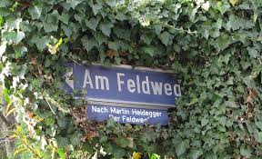
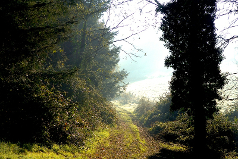

Published: sam. 03 janvier 2015
By poulos
In Annonces .
Le PGCD présente ses meilleurs vœux à tous les lecteurs et curieux
qui ont osé s'aventurer par ici ;) Comme d'habitude, on souhaite à tout
le monde une bonne santé et aussi que cette année 2015 vous révèle
encore et toujours plein de surprises et de découvertes !
En ce début de nouvelle année généralement on se propose de
prendre "des bonnes résolutions" comme on dit. Je vous propose ici de
découvrir pour certains et de redécouvrir pour d'autres un magnifique
texte pas très long, pour lequel j'espère que vous prendrez le temps d'y
jeter un petit coup d’œil. Ce texte nous parle du Simple et de notre
rapport essentiel à lui, et oui le Simple... chose qui a tendance à
perdre toute sa saveur si facilement de nos jours. Alors bien sûr, ce
n'est pas un traité de vertu ou de morale, absolument pas et il ne faut
pas le prendre comme tel, mais simplement un texte qui pose les
questions , des questions qui peuvent nous amener à relativiser et dont
tout le monde a besoin sans forcément le savoir. Mais il nous permet
aussi d'apprécier un regard et une écriture poétique sur des choses qui
ne nous sont pas étrangères et dont on fait régulièrement l'expérience :
tout le monde s'est déjà évidemment promené en chemin que ce soit
en famille ou non, à la campagne, à la mer, en foret, à la montagne,
proche de la nature en somme.
Evidemment je n'ai pas choisi ce texte au hasard. Ce texte Intitulé
Der Feldweg (le chemin de campagne) a été écrit à l'Automne 1948 par
celui que beaucoup considère comme le plus grand penseur du 20ème
siècle : Martin Heidegger. L'histoire raconte que lorsqu'il se trouvait
dans une impasse, Heidegger s'en remettait à une promenade le long de
son chemin en campagne Souabe dans son village natal de Meßkirch
en Bade-Wurtemberg : "*Quand les énigmes se pressaient et qu'aucune
issue ne s'offrait, le chemin de campagne était d'un bon secours.". *
Bonne lecture !

Le chemin de campagne, Messkirch
Der Feldweg (Le chemin de Campagne), par Martin Heidegger
"Il quitte à sa porte le Jardin du Château et court vers les terres
humides d'Ehnried. Par-dessus le mur, les vieux tilleuls du Jardin le
regardent s'éloigner, soit qu'aux environs de Pâques il allonge son
trait clair entre les champs déjà verts et les prairies renaissantes ou
qu'à Noël il disparaisse derrière la première colline parmi les
tourbillons de neige. A partir de la croix, il tourne vers la forêt. À
sa lisière il salue en passant un grand chêne, sous lequel est un banc
tout juste équarri.
Parfois reposait sur le banc tel ou tel des écrits des grands penseurs,
qu'une jeune gaucherie essayait de déchiffrer. Quand les énigmes se
pressaient et qu'aucune issue ne s'offrait, le chemin de campagne était
d'un bon secours. Car, sans rien dire, il conduit nos pas sur sa voie
sinueuse à travers l'étendue de ce pays parcimonieux.
C'est toujours à nouveau que la pensée, aux prises avec les mêmes
écrits ou avec ses propres problèmes, revient vers la voie que le chemin
trace à travers la plaine. Il demeure, sous les pas, aussi près de celui
qui pense que du paysan qui s'en va faucher aux premières heures du
matin. Plus souvent avec les années le chêne au bord du chemin ramène
nos pensées vers les jeux de l'enfance et les premiers choix. Quand
parfois, au cœur de la forêt, un chêne tombait sous la cognée, mon père
aussitôt partait, traversant futaies et clairières ensoleillées, à la
recherche du stère de bois accordé à son atelier. C'est là, dans son
atelier, qu'il travaillait, attentif et réfléchi, dans les intervalles
de son service à l'horloge de la tour et aux cloches qui, l'une comme
les autres, ont leur relation propre au temps et à la temporalité.
Cependant, dans l'écorce du chêne, les gamins découpaient leurs bateaux
qui, munis d'un banc de rameur et d'un gouvernail, flottaient sur la
rivière Mettenbach ou dans le bassin de l'école. Dans ces jeux, les
grandes traversées arrivaient encore facilement à leur terme et
retrouvaient la rive. La part de rêve qu'elles contenaient demeurait
prise dans le vernis brillant, encore à peine discernable, qui
recouvrait toutes choses. L'espace qui leur était ouvert n'allait pas
plus loin que les yeux et la main d'une mère. Tout se passait comme si
sa sollicitude discrète veillait sur tous les êtres. Ces traversées pour
rire ne savaient rien alors des expéditions au cours desquelles tous les
rivages restent en arrière. Cependant la dureté et la senteur du bois de
chêne commençaient à parler, d'une voix moins sourde, de la lenteur et
de la constance avec lesquelles l'arbre croît. Le chêne lui-même disait
qu'une telle croissance est seule à pouvoir fonder ce qui dure et porte
des fruits ; que croître signifie : s'ouvrir à l'immensité du ciel, mais
aussi pousser des racines dans l'obscurité de la terre ; que tout ce qui
est vrai et authentique n'arrive à maturité que si l'homme est
disponible à l'appel du ciel le plus haut, mais demeure en même temps
sous la protection de la terre qui porte et produit.
Cela, le chêne le dit toujours au chemin de campagne, qui passe devant
lui sûr de sa direction. Le chemin rassemble ce qui a son être autour de
lui ; et, à chacun de ceux qui le suivent, il donne ce qui lui revient.
Les mêmes champs, les mêmes pentes couvertes de prairies font escorte au
chemin de campagne en toute saison, proches de lui d'une proximité
toujours autre. Que la chaîne des Alpes au-dessus des forêts s'efface
dans le crépuscule du soir, que, là ou le chemin se hisse sur une
colline, l'alouette au matin s'élance dans le ciel d'été, que le vent
d'est souffle en tempête de la région du village maternel, que le
bûcheron, à la tombée de la nuit, traîne son fagot vers l'âtre, que le
char de la moisson rentre à la ferme en vacillant dans les ornières du
chemin, que les enfants cueillent les premières primevères au bord des
prés, que tout le long du jour le brouillard promène sur la vallée sa
sombre masse, toujours et de tous côtés c'est le Même qui nous parle
autour du chemin.
Le Simple garde le secret de toute permanence et de toute grandeur. Il
arrive chez les hommes sans préparation, bien qu'il lui faille beaucoup
de temps pour croître et mûrir. Les dons qu'il dispense, il les cache
dans l'inapparence de ce qui est toujours le Même. Les choses à demeure
autour du chemin, dans leur ampleur et leur plénitude, donnent le monde.
Comme le dit le vieux maître Eckhart, auprès de qui nous apprenons à
lire et à vivre, c'est seulement dans ce que leur langage ne dit pas que
Dieu est vraiment Dieu. Mais le chemin ne nous parle qu'aussi longtemps
que des hommes, nés dans l'air qui l'environne, ont pouvoir de
l'entendre. Ils sont les servants de leur origine, mais non les esclaves
de l'artifice. C'est en vain que l'homme par ses plans s'efforce
d'imposer un ordre à la terre, s'il n'est pas ordonné lui-même à l'appel
du chemin. Le danger menace, que les hommes d'aujourd'hui n'aient plus
d'oreille pour lui. Seul leur parvient encore le vacarme des machines,
qu'ils ne sont pas loin de prendre pour la voix même de Dieu. Ainsi
l'homme se disperse et n'a plus de chemin. À qui se disperse le Simple
paraît monotone. La monotonie rebute. Les rebutés autour d'eux ne voient
plus qu'uniformité. Le Simple s'est évanoui. Sa puissance silencieuse
est épuisée.
Le nombre de ceux qui connaissent encore le Simple comme un bien qu'ils
ont acquis diminue sans doute rapidement. Mais partout ces peu nombreux
sont ceux qui resteront. Grâce à la puissance tranquille du chemin de
campagne, ils pourront un jour survivre aux forces gigantesques de
l'énergie atomique, dont le calcul et la subtilité de l'homme se sont
emparés pour en faire les entraves de son œuvre propre.
La parole du chemin éveille un sens, qui aime l'espace libre et qui, à
l'endroit favorable, s'élève d'un bond au-dessus de l'affliction
elle-même pour atteindre à une sérénité dernière. Celle-ci s'oppose au
désordre qui ne connaît que le travail, à l'affairement qui, recherché
pour lui-même, ne produit que le vide.
Dans l'air, variable avec les saisons, du chemin de campagne prospère
une gaieté qui sait et dont la mine paraît souvent morose. Ce gai savoir
est une sagesse malicieuse. Nul ne l'obtient qui ne l'ait déjà. Ceux qui
l'ont le tiennent du chemin de campagne. Sur sa voie la tempête d'hiver
et le jour de la moisson se croisent, la turbulence vivifiante du
printemps et le déclin paisible de l'automne se rencontrent, l'humeur
joueuse de la jeunesse et la sagesse de l'âge échangent des regards.
Mais tout devient serein dans une harmonie unique, dont le chemin dans
son silence emporte çà et là l'écho.
La sérénité qui sait est une porte donnant sur l'éternité. Ses battants
tournent sur des gonds, qu'un habile artisan a forgés un jour en partant
des énigmes de l'existence.
Des basses prairies d'Ehnried, le chemin revient au Jardin du Château.
Franchissant une dernière colline, son étroit ruban traverse une
dépression plate, puis arrive aux remparts. Il luit faiblement à la
clarté des étoiles. Derrière le Château se dresse la tour de l'église
Saint-Martin. Avec lenteur, presque avec hésitation, les onze coups de
l'heure s'égrènent et s'effacent dans la nuit. La vieille cloche, aux
cordes de laquelle les garçons ont eu leurs mains rudement chauffées,
tremble sous les coups du marteau, dont nul n'oublie la silhouette
amusante et sombre.
Avec le dernier coup le silence s'approfondit encore. Il s'étend
jusqu'à ceux qui ont été sacrifiés prématurément dans deux guerres
mondiales. Le Simple est devenu encore plus simple. Ce qui est toujours
le Même dépayse et libère. L'appel du chemin de campagne est maintenant
tout à fait distinct. Est-ce l'âme qui parle? est-ce le monde? est-ce
Dieu?
Tout dit le renoncement qui conduit vers le Même. Le renoncement ne
prend pas, mais il donne. Il donne la force inépuisable du Simple. Par
l'appel, en une lointaine Origine, une terre natale nous est rendue."

Poulos